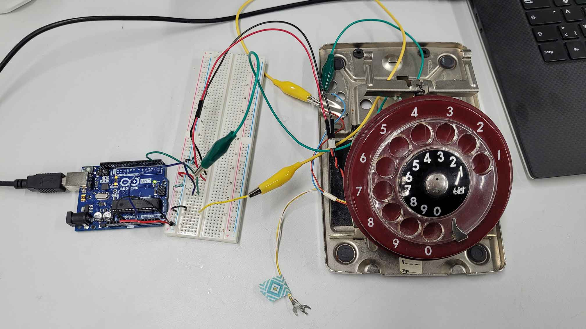
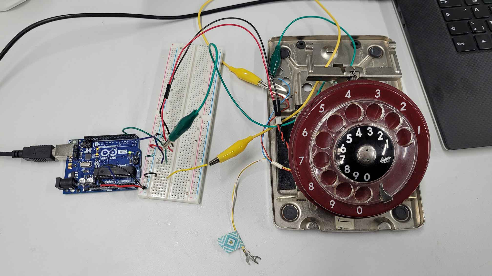
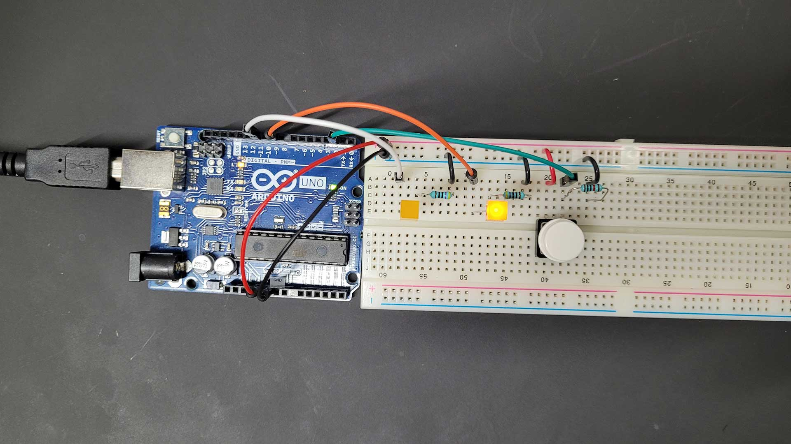
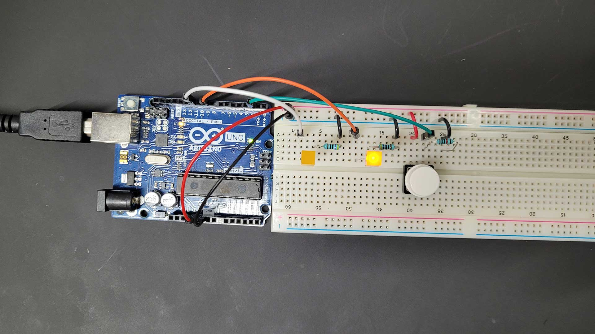

04 Communication
Posted 21.11.22
 I chose to work with the rotary dial mechanism and the idle switch of Matti’s red example telephone, because it is relevant for my final project. The idle switch is triggered when the handset is lifted or placed back on the telephone – basically like a simple button. For this reason I chose Arduino pin 2 to read its signal and added a 10k resistor to prevent a short circuit. The rotary-dial on the other hand was harder to figure out. Matti explained to me that the dial returns a number of pulse signals depending on the number dialled. He knew which wires were the correct ones to read the signal of his telephone’s dial (red and blue). To be sure we tested the signal with the multimeter. With the knowledge gained I connected the dial’s wires with the breadboard and I chose Arduino pin 9 to read its signal.
This video helped me a lot to understand the mechanism in detail and how to set up the code.
 In this process I learned how to use the bounce library that helps to prevent signal noise. The main idea of the
code is to swich between two states: idle and dial. Idle is the state when the handset is placed on the
telephone. Dial is the state when the handset is lifted and the user can dial in a number. By placing the
handset back on the telephone (or by simply pressing the switch) the user can confirm the last dialled number.
This number will be printed out in the console. I then set up a code in processing that communicates with the
Arduino and visualizes the dialled number as a bigger graphic.
In this process I learned how to use the bounce library that helps to prevent signal noise. The main idea of the
code is to swich between two states: idle and dial. Idle is the state when the handset is placed on the
telephone. Dial is the state when the handset is lifted and the user can dial in a number. By placing the
handset back on the telephone (or by simply pressing the switch) the user can confirm the last dialled number.
This number will be printed out in the console. I then set up a code in processing that communicates with the
Arduino and visualizes the dialled number as a bigger graphic.
I uploaded the first version of my code onto the Arduino but unfortunately nothing happened. I couldn’t fin the mistakes by myself, so I asked help from my fellow student Aditya. With his help I made changes of the order of things to happen in my Arduino code. Another try, another failure. Aditya then took a close look at my circuit and found that the idle switch was not properly connected. The red wire was supposed to be connected to the 5V power source coming from the Arduino, but instead I accidentally connected it to ground where I already had a connection – ergo: no current flow. After I fixed that, everything worked fine.
 I chose to work with the rotary dial mechanism and the idle switch of Matti’s red example telephone, because it is relevant for my final project. The idle switch is triggered when the handset is lifted or placed back on the telephone – basically like a simple button. For this reason I chose Arduino pin 2 to read its signal and added a 10k resistor to prevent a short circuit. The rotary-dial on the other hand was harder to figure out. Matti explained to me that the dial returns a number of pulse signals depending on the number dialled. He knew which wires were the correct ones to read the signal of his telephone’s dial (red and blue). To be sure we tested the signal with the multimeter. With the knowledge gained I connected the dial’s wires with the breadboard and I chose Arduino pin 9 to read its signal.
This video helped me a lot to understand the mechanism in detail and how to set up the code.
In this process I learned how to use the bounce library that helps to prevent signal noise. The main idea of the
code is to swich between two states: idle and dial. Idle is the state when the handset is placed on the
telephone. Dial is the state when the handset is lifted and the user can dial in a number. By placing the
handset back on the telephone (or by simply pressing the switch) the user can confirm the last dialled number.
This number will be printed out in the console. I then set up a code in processing that communicates with the
Arduino and visualizes the dialled number as a bigger graphic.
I uploaded the first version of my code onto the Arduino but unfortunately nothing happened. I couldn’t fin the mistakes by myself, so I asked help from my fellow student Aditya. With his help I made changes of the order of things to happen in my Arduino code. Another try, another failure. Aditya then took a close look at my circuit and found that the idle switch was not properly connected. The red wire was supposed to be connected to the 5V power source coming from the Arduino, but instead I accidentally connected it to ground where I already had a connection – ergo: no current flow. After I fixed that, everything worked fine.
Arduino Code
// For handling software debouncing of mechanical switch contacts
#include <Bounce2.h>
// Pins
int idlePin = 2; // Handset
int dialPin = 9; // Rotary-dial
// States
int state = 0;
// How many pulses have been detected for the dialled digit
int pulseCount = 0;
// Bounce objects
Bounce idleSwitch = Bounce();
Bounce dialSwitch = Bounce();
void setup() {
// Open the serial port
Serial.begin(9600);
// Declare pin inputs and attach debounce ojects
pinMode(idlePin, INPUT);
idleSwitch.attach(idlePin);
idleSwitch.interval(5);
pinMode(dialPin, INPUT);
dialSwitch.attach(dialPin);
dialSwitch.interval(5);
}
void loop() {
// Read the current state of all switches
idleSwitch.update();
dialSwitch.update();
switch (state) {
// Idle
case 0:
if (idleSwitch.rose()) {
state = 1;
}
break;
// Dial
case 1:
if (dialSwitch.rose()) {
pulseCount++;
// The digit 0 has 10 pulses
if (pulseCount == 10) {
pulseCount = 0;
}
}
break;
}
// If the handset is placed on the telephone, the telephone becomes idle (no matter when)
if (idleSwitch.fell()) {
Serial.println(pulseCount);
state = 0;
pulseCount = 0;
}
}
Processing Code
import processing.serial.*;
Serial myPort; // Create object from Serial class
String str; // Data received from the serial port
void setup()
{
size(500, 500);
// Open whatever port is the one you're using.
// Change the 0 in Serial.list()[0] to the correct device
printArray(Serial.list());
String portName = Serial.list()[0];
myPort = new Serial(this, portName, 9600);
}
void draw()
{
if ( myPort.available() > 0) { // If data is available,
str = myPort.readStringUntil('\n'); // read it and store it in str
if (str != null) {
println(str);
myPort.clear();
background(0);
fill(255);
textSize(400);
textAlign(CENTER, CENTER);
text(str, width/2, height);
}
}
}
 I came up with the idea for my project, when Matti introduced the rotary dial mechanisms of old telephones and
how they can be used as potential inputs. I want to turn an old rotary dial telephone into an alarm clock and
this is how it is supposed to work: the rotary dial is used to set up the time of the alarm. When the alarm goes
off, the telephone starts ringing and it only stops, when the phone is picked up.
I came up with the idea for my project, when Matti introduced the rotary dial mechanisms of old telephones and
how they can be used as potential inputs. I want to turn an old rotary dial telephone into an alarm clock and
this is how it is supposed to work: the rotary dial is used to set up the time of the alarm. When the alarm goes
off, the telephone starts ringing and it only stops, when the phone is picked up.
 Like many other people, I find it difficult to get up early in the morning. Especially during autumn and winter
here in Finland the days get really short and the mornings are dark. For this reason, I am using a light alarm
clock (also called “wake-up light”) that makes it easier to wake up and get out of bed during dark times.
Ideally, I manage to transform the telephone not only into an alarm clock but also into a light alarm clock.
Like many other people, I find it difficult to get up early in the morning. Especially during autumn and winter
here in Finland the days get really short and the mornings are dark. For this reason, I am using a light alarm
clock (also called “wake-up light”) that makes it easier to wake up and get out of bed during dark times.
Ideally, I manage to transform the telephone not only into an alarm clock but also into a light alarm clock.
 Must have
Must have
 Should have
Should have
 Could have
Could have
 “FLUX is an alt.arcade reaction game, where players compete against one another to hit 5 buttons in the right
order as quickly as possible.”
“FLUX is an alt.arcade reaction game, where players compete against one another to hit 5 buttons in the right
order as quickly as possible.”
 This could be realized with a monitor made of multiple photoresistors arranged in a grid. A separate screen
would display a specific pattern or shape for a limited time. The player would then have to memorize the image
and recreate it by using a flashlight as a controller to “draw” on the light sensor monitor. Just like in Simon,
this game would get harder with every successful repetition as the images would get more and more complex.
This could be realized with a monitor made of multiple photoresistors arranged in a grid. A separate screen
would display a specific pattern or shape for a limited time. The player would then have to memorize the image
and recreate it by using a flashlight as a controller to “draw” on the light sensor monitor. Just like in Simon,
this game would get harder with every successful repetition as the images would get more and more complex.
 
